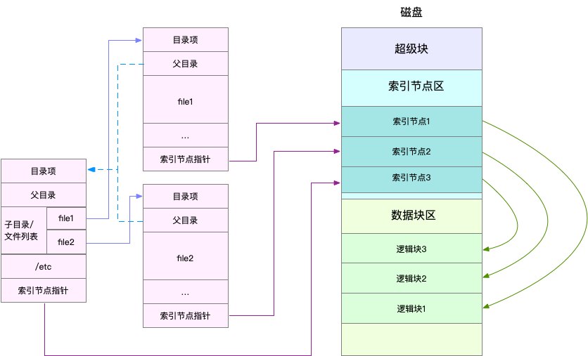
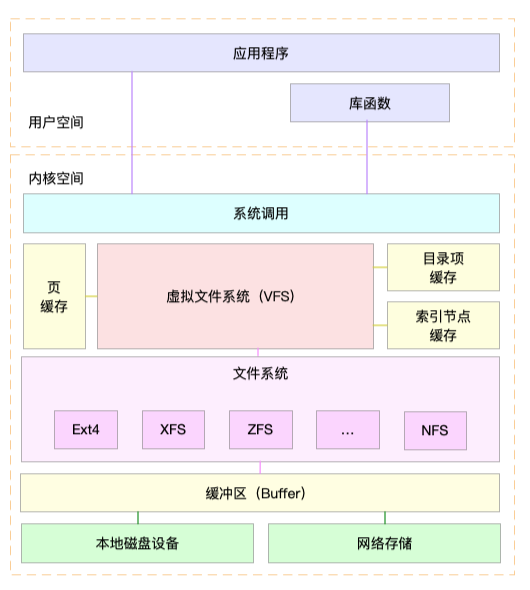

- 00 开篇词 别再让Linux性能问题成为你的绊脚石.md.html
- 01 如何学习Linux性能优化？.md.html
- 02 基础篇：到底应该怎么理解“平均负载”？.md.html
- 03 基础篇：经常说的 CPU 上下文切换是什么意思？（上）.md.html
- 04 基础篇：经常说的 CPU 上下文切换是什么意思？（下）.md.html
- 05 基础篇：某个应用的CPU使用率居然达到100%，我该怎么办？.md.html
- 06 案例篇：系统的 CPU 使用率很高，但为啥却找不到高 CPU 的应用？.md.html
- 07 案例篇：系统中出现大量不可中断进程和僵尸进程怎么办？（上）.md.html
- 08 案例篇：系统中出现大量不可中断进程和僵尸进程怎么办？（下）.md.html
- 09 基础篇：怎么理解Linux软中断？.md.html
- 10 案例篇：系统的软中断CPU使用率升高，我该怎么办？.md.html
- 11 套路篇：如何迅速分析出系统CPU的瓶颈在哪里？.md.html
- 12 套路篇：CPU 性能优化的几个思路.md.html
- 13 答疑（一）：无法模拟出 RES 中断的问题，怎么办？.md.html
- 14 答疑（二）：如何用perf工具分析Java程序？.md.html
- 15 基础篇：Linux内存是怎么工作的？.md.html
- 16 基础篇：怎么理解内存中的Buffer和Cache？.md.html
- 17 案例篇：如何利用系统缓存优化程序的运行效率？.md.html
- 18 案例篇：内存泄漏了，我该如何定位和处理？.md.html
- 19 案例篇：为什么系统的Swap变高了（上）.md.html
- 20 案例篇：为什么系统的Swap变高了？（下）.md.html
- 21 套路篇：如何“快准狠”找到系统内存的问题？.md.html
- 22 答疑（三）：文件系统与磁盘的区别是什么？.md.html
- 23 基础篇：Linux 文件系统是怎么工作的？.md.html
- 24 基础篇：Linux 磁盘I_O是怎么工作的（上）.md.html
- 25 基础篇：Linux 磁盘I_O是怎么工作的（下）.md.html
- 26 案例篇：如何找出狂打日志的“内鬼”？.md.html
- 27 案例篇：为什么我的磁盘I_O延迟很高？.md.html
- 28 案例篇：一个SQL查询要15秒，这是怎么回事？.md.html
- 29 案例篇：Redis响应严重延迟，如何解决？.md.html
- 30 套路篇：如何迅速分析出系统I_O的瓶颈在哪里？.md.html
- 31 套路篇：磁盘 I_O 性能优化的几个思路.md.html
- 32 答疑（四）：阻塞、非阻塞 I_O 与同步、异步 I_O 的区别和联系.md.html
- 33 关于 Linux 网络，你必须知道这些（上）.md.html
- 34 关于 Linux 网络，你必须知道这些（下）.md.html
- 35 基础篇：C10K 和 C1000K 回顾.md.html
- 36 套路篇：怎么评估系统的网络性能？.md.html
- 37 案例篇：DNS 解析时快时慢，我该怎么办？.md.html
- 38 案例篇：怎么使用 tcpdump 和 Wireshark 分析网络流量？.md.html
- 39 案例篇：怎么缓解 DDoS 攻击带来的性能下降问题？.md.html
- 40 案例篇：网络请求延迟变大了，我该怎么办？.md.html
- 41 案例篇：如何优化 NAT 性能？（上）.md.html
- 42 案例篇：如何优化 NAT 性能？（下）.md.html
- 43 套路篇：网络性能优化的几个思路（上）.md.html
- 44 套路篇：网络性能优化的几个思路（下）.md.html
- 45 答疑（五）：网络收发过程中，缓冲区位置在哪里？.md.html
- 46 案例篇：为什么应用容器化后，启动慢了很多？.md.html
- 47 案例篇：服务器总是时不时丢包，我该怎么办？（上）.md.html
- 48 案例篇：服务器总是时不时丢包，我该怎么办？（下）.md.html
- 49 案例篇：内核线程 CPU 利用率太高，我该怎么办？.md.html
- 50 案例篇：动态追踪怎么用？（上）.md.html
- 51 案例篇：动态追踪怎么用？（下）.md.html
- 52 案例篇：服务吞吐量下降很厉害，怎么分析？.md.html
- 53 套路篇：系统监控的综合思路.md.html
- 54 套路篇：应用监控的一般思路.md.html
- 55 套路篇：分析性能问题的一般步骤.md.html
- 56 套路篇：优化性能问题的一般方法.md.html
- 57 套路篇：Linux 性能工具速查.md.html
- 58 答疑（六）：容器冷启动如何性能分析？.md.html
- 加餐（一） 书单推荐：性能优化和Linux 系统原理.md.html
- 加餐（二） 书单推荐：网络原理和 Linux 内核实现.md.html
- 用户故事 “半路出家 ”，也要顺利拿下性能优化！.md.html
- 用户故事 运维和开发工程师们怎么说？.md.html
- 结束语 愿你攻克性能难关.md.html
- 捐赠
23 基础篇：Linux 文件系统是怎么工作的？
你好，我是倪朋飞。
通过前面CPU和内存模块的学习，我相信，你已经掌握了CPU和内存的性能分析以及优化思路。从这一节开始，我们将进入下一个重要模块——文件系统和磁盘的I/O性能。
同CPU、内存一样，磁盘和文件系统的管理，也是操作系统最核心的功能。
磁盘为系统提供了最基本的持久化存储。
文件系统则在磁盘的基础上，提供了一个用来管理文件的树状结构。
那么，磁盘和文件系统是怎么工作的呢？又有哪些指标可以衡量它们的性能呢？
今天，我就带你先来看看，Linux文件系统的工作原理。磁盘的工作原理，我们下一节再来学习。
索引节点和目录项
文件系统，本身是对存储设备上的文件，进行组织管理的机制。组织方式不同，就会形成不同的文件系统。
你要记住最重要的一点，在Linux中一切皆文件。不仅普通的文件和目录，就连块设备、套接字、管道等，也都要通过统一的文件系统来管理。
为了方便管理，Linux文件系统为每个文件都分配两个数据结构，索引节点（index node）和目录项（directory entry）。它们主要用来记录文件的元信息和目录结构。
索引节点，简称为inode，用来记录文件的元数据，比如inode编号、文件大小、访问权限、修改日期、数据的位置等。索引节点和文件一一对应，它跟文件内容一样，都会被持久化存储到磁盘中。所以记住，索引节点同样占用磁盘空间。
目录项，简称为dentry，用来记录文件的名字、索引节点指针以及与其他目录项的关联关系。多个关联的目录项，就构成了文件系统的目录结构。不过，不同于索引节点，目录项是由内核维护的一个内存数据结构，所以通常也被叫做目录项缓存。
换句话说，索引节点是每个文件的唯一标志，而目录项维护的正是文件系统的树状结构。目录项和索引节点的关系是多对一，你可以简单理解为，一个文件可以有多个别名。
举个例子，通过硬链接为文件创建的别名，就会对应不同的目录项，不过这些目录项本质上还是链接同一个文件，所以，它们的索引节点相同。
索引节点和目录项纪录了文件的元数据，以及文件间的目录关系，那么具体来说，文件数据到底是怎么存储的呢？是不是直接写到磁盘中就好了呢？
实际上，磁盘读写的最小单位是扇区，然而扇区只有512B 大小，如果每次都读写这么小的单位，效率一定很低。所以，文件系统又把连续的扇区组成了逻辑块，然后每次都以逻辑块为最小单元，来管理数据。常见的逻辑块大小为4KB，也就是由连续的8个扇区组成。
为了帮助你理解目录项、索引节点以及文件数据的关系，我画了一张示意图。你可以对照着这张图，来回忆刚刚讲过的内容，把知识和细节串联起来。

不过，这里有两点需要你注意。
第一，目录项本身就是一个内存缓存，而索引节点则是存储在磁盘中的数据。在前面的Buffer和Cache原理中，我曾经提到过，为了协调慢速磁盘与快速CPU的性能差异，文件内容会缓存到页缓存Cache中。
那么，你应该想到，这些索引节点自然也会缓存到内存中，加速文件的访问。
第二，磁盘在执行文件系统格式化时，会被分成三个存储区域，超级块、索引节点区和数据块区。其中，
超级块，存储整个文件系统的状态。
索引节点区，用来存储索引节点。
数据块区，则用来存储文件数据。
虚拟文件系统
目录项、索引节点、逻辑块以及超级块，构成了Linux文件系统的四大基本要素。不过，为了支持各种不同的文件系统，Linux内核在用户进程和文件系统的中间，又引入了一个抽象层，也就是虚拟文件系统VFS（Virtual File System）。
VFS 定义了一组所有文件系统都支持的数据结构和标准接口。这样，用户进程和内核中的其他子系统，只需要跟VFS 提供的统一接口进行交互就可以了，而不需要再关心底层各种文件系统的实现细节。
这里，我画了一张Linux文件系统的架构图，帮你更好地理解系统调用、VFS、缓存、文件系统以及块存储之间的关系。

通过这张图，你可以看到，在VFS的下方，Linux支持各种各样的文件系统，如Ext4、XFS、NFS等等。按照存储位置的不同，这些文件系统可以分为三类。
第一类是基于磁盘的文件系统，也就是把数据直接存储在计算机本地挂载的磁盘中。常见的Ext4、XFS、OverlayFS等，都是这类文件系统。
第二类是基于内存的文件系统，也就是我们常说的虚拟文件系统。这类文件系统，不需要任何磁盘分配存储空间，但会占用内存。我们经常用到的 /proc 文件系统，其实就是一种最常见的虚拟文件系统。此外，/sys 文件系统也属于这一类，主要向用户空间导出层次化的内核对象。
第三类是网络文件系统，也就是用来访问其他计算机数据的文件系统，比如NFS、SMB、iSCSI等。
这些文件系统，要先挂载到 VFS 目录树中的某个子目录（称为挂载点），然后才能访问其中的文件。拿第一类，也就是基于磁盘的文件系统为例，在安装系统时，要先挂载一个根目录（/），在根目录下再把其他文件系统（比如其他的磁盘分区、/proc文件系统、/sys文件系统、NFS等）挂载进来。
文件系统I/O
把文件系统挂载到挂载点后，你就能通过挂载点，再去访问它管理的文件了。VFS 提供了一组标准的文件访问接口。这些接口以系统调用的方式，提供给应用程序使用。
就拿cat 命令来说，它首先调用 open() ，打开一个文件；然后调用 read() ，读取文件的内容；最后再调用 write() ，把文件内容输出到控制台的标准输出中：
int open(const char *pathname, int flags, mode_t mode);
ssize_t read(int fd, void *buf, size_t count);
ssize_t write(int fd, const void *buf, size_t count);
文件读写方式的各种差异，导致 I/O的分类多种多样。最常见的有，缓冲与非缓冲I/O、直接与非直接I/O、阻塞与非阻塞I/O、同步与异步I/O等。 接下来，我们就详细看这四种分类。
第一种，根据是否利用标准库缓存，可以把文件I/O分为缓冲I/O与非缓冲I/O。
缓冲I/O，是指利用标准库缓存来加速文件的访问，而标准库内部再通过系统调度访问文件。
非缓冲I/O，是指直接通过系统调用来访问文件，不再经过标准库缓存。
注意，这里所说的“缓冲”，是指标准库内部实现的缓存。比方说，你可能见到过，很多程序遇到换行时才真正输出，而换行前的内容，其实就是被标准库暂时缓存了起来。
无论缓冲I/O还是非缓冲I/O，它们最终还是要经过系统调用来访问文件。而根据上一节内容，我们知道，系统调用后，还会通过页缓存，来减少磁盘的I/O操作。
第二，根据是否利用操作系统的页缓存，可以把文件I/O分为直接I/O与非直接I/O。
直接I/O，是指跳过操作系统的页缓存，直接跟文件系统交互来访问文件。
非直接I/O正好相反，文件读写时，先要经过系统的页缓存，然后再由内核或额外的系统调用，真正写入磁盘。
想要实现直接I/O，需要你在系统调用中，指定 O_DIRECT 标志。如果没有设置过，默认的是非直接I/O。
不过要注意，直接I/O、非直接I/O，本质上还是和文件系统交互。如果是在数据库等场景中，你还会看到，跳过文件系统读写磁盘的情况，也就是我们通常所说的裸I/O。
第三，根据应用程序是否阻塞自身运行，可以把文件I/O分为阻塞I/O和非阻塞I/O：
所谓阻塞I/O，是指应用程序执行I/O操作后，如果没有获得响应，就会阻塞当前线程，自然就不能执行其他任务。
所谓非阻塞I/O，是指应用程序执行I/O操作后，不会阻塞当前的线程，可以继续执行其他的任务，随后再通过轮询或者事件通知的形式，获取调用的结果。
比方说，访问管道或者网络套接字时，设置 O_NONBLOCK 标志，就表示用非阻塞方式访问；而如果不做任何设置，默认的就是阻塞访问。
第四，根据是否等待响应结果，可以把文件I/O分为同步和异步I/O：
所谓同步I/O，是指应用程序执行I/O操作后，要一直等到整个I/O完成后，才能获得I/O响应。
所谓异步I/O，是指应用程序执行I/O操作后，不用等待完成和完成后的响应，而是继续执行就可以。等到这次 I/O完成后，响应会用事件通知的方式，告诉应用程序。
举个例子，在操作文件时，如果你设置了 O_SYNC 或者 O_DSYNC 标志，就代表同步I/O。如果设置了O_DSYNC，就要等文件数据写入磁盘后，才能返回；而O_SYNC，则是在O_DSYNC基础上，要求文件元数据也要写入磁盘后，才能返回。
再比如，在访问管道或者网络套接字时，设置了O_ASYNC选项后，相应的I/O就是异步I/O。这样，内核会再通过SIGIO或者SIGPOLL，来通知进程文件是否可读写。
你可能发现了，这里的好多概念也经常出现在网络编程中。比如非阻塞I/O，通常会跟select/poll配合，用在网络套接字的I/O中。
你也应该可以理解，“Linux 一切皆文件”的深刻含义。无论是普通文件和块设备、还是网络套接字和管道等，它们都通过统一的VFS 接口来访问。
性能观测
学了这么多文件系统的原理，你估计也是迫不及待想上手，观察一下文件系统的性能情况了。
接下来，打开一个终端，SSH登录到服务器上，然后跟我一起来探索，如何观测文件系统的性能。
容量
对文件系统来说，最常见的一个问题就是空间不足。当然，你可能本身就知道，用 df 命令，就能查看文件系统的磁盘空间使用情况。比如：
$ df /dev/sda1
Filesystem 1K-blocks Used Available Use% Mounted on
/dev/sda1 30308240 3167020 27124836 11% /
你可以看到，我的根文件系统只使用了11%的空间。这里还要注意，总空间用1K-blocks的数量来表示，你可以给df加上-h选项，以获得更好的可读性：
$ df -h /dev/sda1
Filesystem Size Used Avail Use% Mounted on
/dev/sda1 29G 3.1G 26G 11% /
不过有时候，明明你碰到了空间不足的问题，可是用df查看磁盘空间后，却发现剩余空间还有很多。这是怎么回事呢？
不知道你还记不记得，刚才我强调的一个细节。除了文件数据，索引节点也占用磁盘空间。你可以给df命令加上 -i 参数，查看索引节点的使用情况，如下所示：
$ df -i /dev/sda1
Filesystem Inodes IUsed IFree IUse% Mounted on
/dev/sda1 3870720 157460 3713260 5% /
索引节点的容量，（也就是Inode个数）是在格式化磁盘时设定好的，一般由格式化工具自动生成。当你发现索引节点空间不足，但磁盘空间充足时，很可能就是过多小文件导致的。
所以，一般来说，删除这些小文件，或者把它们移动到索引节点充足的其他磁盘中，就可以解决这个问题。
缓存
在前面Cache案例中，我已经介绍过，可以用 free 或 vmstat，来观察页缓存的大小。复习一下，free输出的Cache，是页缓存和可回收Slab缓存的和，你可以从 /proc/meminfo ，直接得到它们的大小：
$ cat /proc/meminfo | grep -E "SReclaimable|Cached"
Cached: 748316 kB
SwapCached: 0 kB
SReclaimable: 179508 kB
话说回来，文件系统中的目录项和索引节点缓存，又该如何观察呢？
实际上，内核使用Slab机制，管理目录项和索引节点的缓存。/proc/meminfo只给出了Slab的整体大小，具体到每一种Slab缓存，还要查看/proc/slabinfo这个文件。
比如，运行下面的命令，你就可以得到，所有目录项和各种文件系统索引节点的缓存情况：
$ cat /proc/slabinfo | grep -E '^#|dentry|inode'
# name <active_objs> <num_objs> <objsize> <objperslab> <pagesperslab> : tunables <limit> <batchcount> <sharedfactor> : slabdata <active_slabs> <num_slabs> <sharedavail>
xfs_inode 0 0 960 17 4 : tunables 0 0 0 : slabdata 0 0 0
...
ext4_inode_cache 32104 34590 1088 15 4 : tunables 0 0 0 : slabdata 2306 2306 0hugetlbfs_inode_cache 13 13 624 13 2 : tunables 0 0 0 : slabdata 1 1 0
sock_inode_cache 1190 1242 704 23 4 : tunables 0 0 0 : slabdata 54 54 0
shmem_inode_cache 1622 2139 712 23 4 : tunables 0 0 0 : slabdata 93 93 0
proc_inode_cache 3560 4080 680 12 2 : tunables 0 0 0 : slabdata 340 340 0
inode_cache 25172 25818 608 13 2 : tunables 0 0 0 : slabdata 1986 1986 0
dentry 76050 121296 192 21 1 : tunables 0 0 0 : slabdata 5776 5776 0
这个界面中，dentry行表示目录项缓存，inode_cache行，表示VFS索引节点缓存，其余的则是各种文件系统的索引节点缓存。
/proc/slabinfo 的列比较多，具体含义你可以查询 man slabinfo。在实际性能分析中，我们更常使用 slabtop ，来找到占用内存最多的缓存类型。
比如，下面就是我运行slabtop得到的结果：
# 按下c按照缓存大小排序，按下a按照活跃对象数排序
$ slabtop
Active / Total Objects (% used) : 277970 / 358914 (77.4%)
Active / Total Slabs (% used) : 12414 / 12414 (100.0%)
Active / Total Caches (% used) : 83 / 135 (61.5%)
Active / Total Size (% used) : 57816.88K / 73307.70K (78.9%)
Minimum / Average / Maximum Object : 0.01K / 0.20K / 22.88K
OBJS ACTIVE USE OBJ SIZE SLABS OBJ/SLAB CACHE SIZE NAME
69804 23094 0% 0.19K 3324 21 13296K dentry
16380 15854 0% 0.59K 1260 13 10080K inode_cache
58260 55397 0% 0.13K 1942 30 7768K kernfs_node_cache
485 413 0% 5.69K 97 5 3104K task_struct
1472 1397 0% 2.00K 92 16 2944K kmalloc-2048
从这个结果你可以看到，在我的系统中，目录项和索引节点占用了最多的Slab缓存。不过它们占用的内存其实并不大，加起来也只有23MB左右。
小结
今天，我带你梳理了Linux文件系统的工作原理。
文件系统，是对存储设备上的文件，进行组织管理的一种机制。为了支持各类不同的文件系统，Linux在各种文件系统实现上，抽象了一层虚拟文件系统（VFS）。
VFS 定义了一组所有文件系统都支持的数据结构和标准接口。这样，用户进程和内核中的其他子系统，就只需要跟 VFS 提供的统一接口进行交互。
为了降低慢速磁盘对性能的影响，文件系统又通过页缓存、目录项缓存以及索引节点缓存，缓和磁盘延迟对应用程序的影响。
在性能观测方面，今天主要讲了容量和缓存的指标。下一节，我们将会学习Linux磁盘 I/O的工作原理，并掌握磁盘I/O的性能观测方法。
思考
最后，给你留一个思考题。在实际工作中，我们经常会根据文件名字，查找它所在路径，比如：
$ find / -name file-name
今天的问题就是，这个命令，会不会导致系统的缓存升高呢？如果有影响，又会导致哪种类型的缓存升高呢？你可以结合今天内容，自己先去操作和分析，看看观察到的结果跟你分析的是否一样。
欢迎在留言区和我讨论，也欢迎把这篇文章分享给你的同事、朋友。我们一起在实战中演练，在交流中进步。
© 2019 - 2023 Liangliang Lee. Powered by gin and hexo-theme-book.